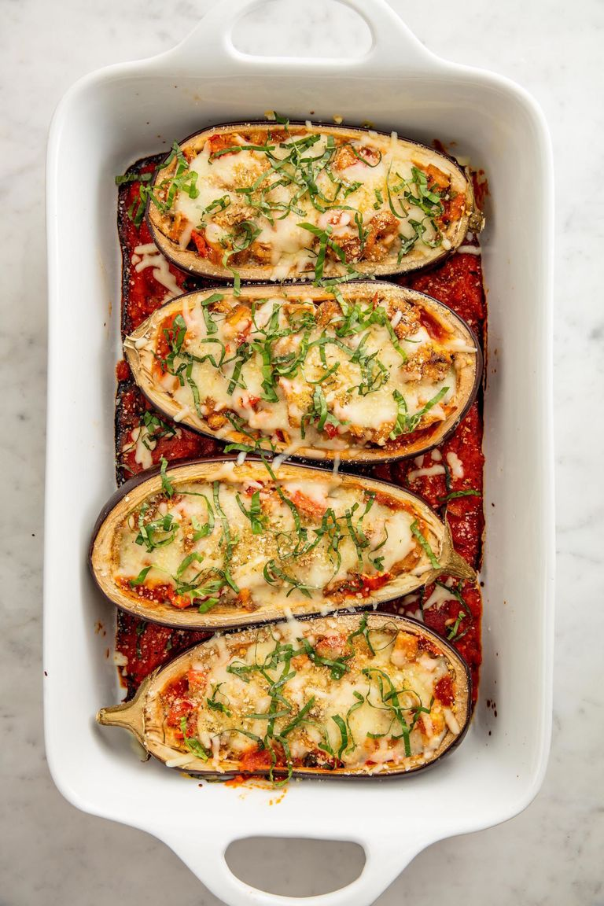

Stuffed Eggplant

Description
Eggplant it's a staple mediterranean ingredient
This vegetarian recipe consists of the beet pulp itself with homemade tomato sauce, stuffed with mozzarella cheese and basil leaves
Ingredients:
- 2x Medium Size Eggplants
- 1x Garlic Clove
- 400g Tomato Pulp
- 200g Mozzarella Cheese
- Gran Padano Cheese q.b
- Salt q.b
- Pepper q.b
- Olive oil q.b
- Fresh basil leaves q.b
Instructions:
- Cut the eggplants in half, make cross slices in the pulp and season with salt, pepper and olive oil
- Cook in the oven (200 Celsius) for aprox. 30min
- In a frying pan, sauté the garlic clove with olive oil, add the tomato pulp, pepper and salt
- Take out the eggplants from the oven, add the sauté to the top, add the mozzarella cheese, the grated gran padano cheese and put it back in the oven (200 Celsius) for aprox. 15min
- Before serving add the basil leaves on the top